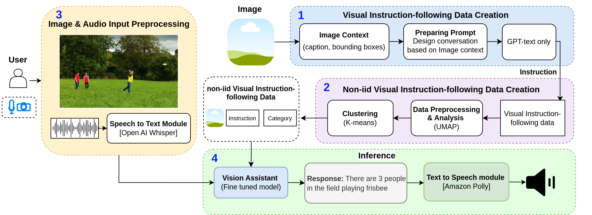
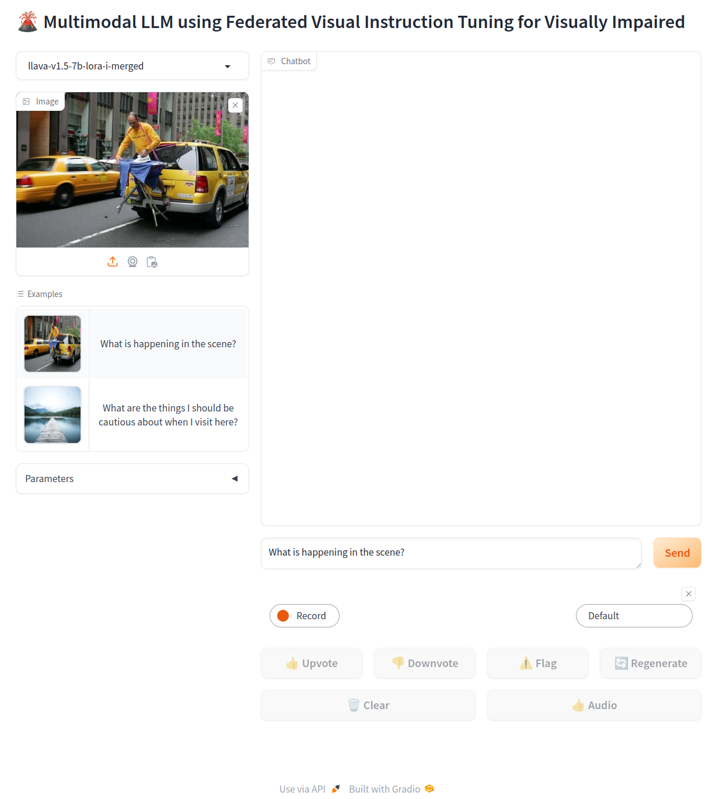
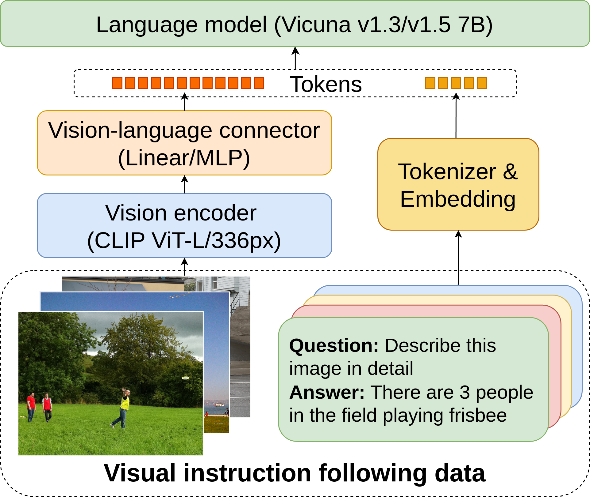
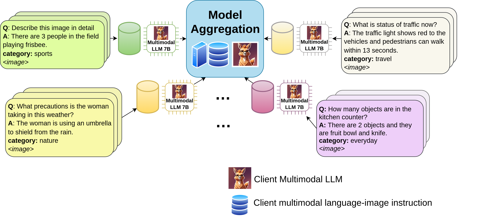

ACM ICMI 2025 (Multimodal Interaction Track)

Over 285 million people globally live with visual impairment. Many struggle with tasks like recognizing scenes, reading signs, or navigating safely. The key problem is that seeing isn't understanding—just knowing there's a chair or sign isn't enough. What visually impaired users really need is contextual understanding expressed in natural language.
We present a federated multimodal assistant that respects privacy while enabling real-time scene understanding. Our approach keeps user data on device—images from homes, workplaces, and personal documents stay local. Only model updates are shared. Using efficient LoRA-based instruction tuning, we created a capable multimodal assistant trainable in ~36 hours on a single 2×A100 node. The system achieves 85% task completion in usability studies, with users reporting natural, meaningful responses.
This demonstrates that privacy doesn't have to come at the cost of performance. With federated visual instruction tuning, we get both.
User data stays on device. Instead of sending raw images to servers, only model updates are shared—making training both private and robust.
Teaching LLMs to see and talk by framing tasks as natural instructions—moving beyond recognition to contextual reasoning.
Federated fine-tuning nearly matches centralized performance while preserving privacy and handling diverse user environments.
LoRA-based adaptation enables training on resource-constrained devices, making assistive AI accessible and deployable.
Our system integrates three core components that work together:
When you send an image and question:

Interactive interface for real-time image analysis and assistance.
A powerful CLIP ViT-L/336px encoder processes images to extract rich visual features, identifying objects, text, spatial relationships, and context.
A specialized two-layer MLP bridges vision and language, translating visual features into a form the language model can understand.
Vicuna 7B generates natural, conversational responses based on visual information and your questions with accuracy verification.

Detailed processing pipeline
Visual features flow through the connector layer where they align with language embeddings. The language model then processes both the visual context and your query to generate accurate responses with verification.

Privacy preserving training
Your device trains locally on your data, then shares only encrypted model weight updates, never your actual images. Multiple devices collaborate to improve the global model while keeping all personal data private.
Tested with participants performing object identification, text reading, and navigation tasks. Achieved over 80% task success, fewer critical errors, and positive feedback on naturalness of responses.
Evaluated on HallusionBench dataset. Federated fine-tuning reduced hallucination rates compared to baseline, showing that diverse distributed data improves reliability.
Federated fine-tuning nearly matches centralized performance on OK-VQA, VQAv2, and GQA while preserving privacy. The key insight: privacy doesn't have to come at the cost of performance.
This technology opens new possibilities for independence and accessibility:
Read product labels, find items on shelves, check expiration dates, and navigate stores independently.
Understand street signs, identify landmarks, get real-time descriptions of surroundings and obstacles.
Access visual content on screens, understand images in documents, and engage with social media photos.
Identify objects, read mail, check clothing colors, and handle everyday visual tasks with confidence.
This work was presented at ACM ICMI 2025. For technical details, methodology, and complete evaluation results, please refer to our paper.
@inproceedings{bala2025multimodal,
title={Multimodal LLM using Federated Visual Instruction Tuning for Visually Impaired},
author={Bala, Ankith and Vereshchaka, Alina},
booktitle={Proceedings of the 2025 International Conference on Multimodal Interaction},
year={2025},
organization={ACM}
}